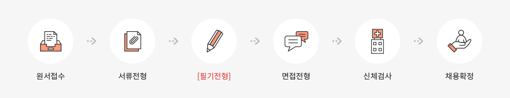
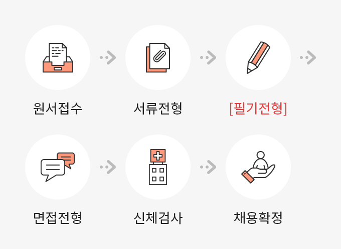

채용안내
본 안내 사항은 지원자분들의 이해를 돕기 위한 일반적인 사항으로 실제 채용공고와는 일부 다른 부분이 있을 수 있습니다.
반드시 지원하시는 채용건의 채용공고문에 기재된 내용을 확인하시어 채용 진행 시 불이익이 없도록 주의해주세요.
반드시 지원하시는 채용건의 채용공고문에 기재된 내용을 확인하시어 채용 진행 시 불이익이 없도록 주의해주세요.
정기공채(일반직 5급)
모집분야
- 공사의 무역보험을 직접적으로 담당하는 직종으로 무역보험 인수심사, 신용조사업무, 보상 및 채권회수 업무, IT 업무 등을 담당하고 있습니다.
- 모집분야는 직무별로 구분하여 3개로 운영 중이며, 아래 직무설명자료는 공사 채용을 준비하시는 지원자분들께 도움을 드리기 위해 이전에 시행된 일반직 공채의 모집분야 등을 참고하여 작성된 예시입니다.
- 모집분야는 조직 및 인력운영 상황에 따라 변경될 수 있으니, 최종적으로 지원하시는 채용공고에 첨부되어 있는 직무별 “직무설명자료”를 참고해주시기 바랍니다.
* 일반직(5급) 직무설명자료 예시
| 모집분야 | 직무설명자료 다운로드 |
|---|---|
| 조사·인수 | 조사인수_직무설명자료.pdf |
| 법무·보상·채권관리 | 법무보상채권관리_직무설명자료.pdf |
| IT | IT_직무설명자료.pdf |
응시자격
- 공사는 NCS기반 직무능력중심 채용 및 블라인드 채용을 진행하고 있어 입사지원시 사진, 성별, 연령, 학력사항 등 직무와 무관한 요소를 수집하고 있지 않습니다.
- 이에 응시자격 또한 성별, 연령, 학력 등에 있어서 제한을 두고 있지 않은 열린 채용을 진행하고 있습니다. 다만, 무역보험을 직접적으로 담당하기 위해서는 학부수준의 전공지식에 기반한 직무능력이 필요하며, 이를 평가하기 위해 필기시험을 실시하고 있기 때문에 최종 입사를 위해서는 이에 대한 준비가 필요합니다.
모집시기
- 통상 상반기는 3월, 하반기는 9월에 채용공고를 시작하고 있으며, 정부의 인력증원 승인현황 및 내부 인력수요 등에 따라 모집횟수 및 모집시기는 변경될 수 있으며, 최종적으로 채용공고를 확인해주시기 바랍니다.
채용절차


※ [필기전형]은 통상 3가지 영역으로 구성됩니다. 아래 사항은
지원자분들의 이해를 돕기 위한 예시로 최종적으로는 지원하시는
채용공고를 확인해주시기 바랍니다.
* 일반직(5급) 필기전형 예시
| 모집분야 | ① 학부수준의 전공에 기반한 직무능력평가 및 논술 | ② NCS기반 직업기초능력평가 |
③ 영어성적
입사지원시 제출한 어학성적(토익, 토플, 텝스)으로 대체 |
|---|---|---|---|
| 조사·인수 | 경영학, 경제학 중 택1 | ||
| 법무·보상·채권관리 | 법학 | ||
| IT | IT |